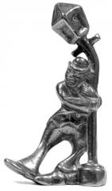

QlL announces: Exercises in Song
26 Nov 2008
Imagine singing the same song, ninety-nine different ways. Taking a popular English folk song and rewriting it so that it exemplifies the style "Metaphorically", or so that it resembles an official complaint letter, or so that groups of letters are rearranged by mathematical formula. This is Exercises in Song, and you can order a print copy of selected Exercises now, for free.
The core set of 99 variations are modelled after the seminal 1947 literary masterpiece by Raymond Queneau, Exercices de Style. Whereas Queneau told many variations of the same everyday story, Exercises in Song elaborates upon the eight lines of Show Me The Way To Go Home. Each variation is performable to the melody of the original folk song, and Exercises in Song also includes new variations, not seen in Queaneau's work: from ninety-nine core variations; to nine re-rendering of classics of English literature in the Show Me... format; to three retellings of Queneau's original story in song.
Exercises in Song 2008, the third Pocketful of Lies, is a sample of the best of both the original ninety-nine and the new twelve variations, finishing on December 25 with a special, Christmassy variation.
Sing an Exercise in Song every day during advent. Sing them to your co-workers. Sing them to your children. Sing them in the bath. Just sing them.
Sneak preview of APoL#3
24 Nov 2008
To wet your whistle, we've got a sneak preview of next month's Pocketful of Lies..
Are you ready? Here it is:
Well, I don't know about you, but I'm going to have to sit down now. Phew.
Orders accepted for the third Pocketful of Lies
23 Nov 2008
You can now order a free print copy of the third Pocketful of Lies using our order form. Anyone already on our mailing list from Stones and Bones should receive a copy automatically; if you're in that category, but would like to use that form to either say hello or update your address, then please do so anyway.
But what's it going to be about? you might well ask. Our first response would be: "shut your cakehole: it's free, for heaven's sake!" We'd continue more charitably with: "to be announced, o impatient souls: in the next few days!" Then, in a less bullish mood, we'd probably add: "and anyway, it's, er, quite complicated: read the QlL blog for more information."
Incidentally, on December 1st, web publication will begin of A Pocketful of Lies #3 in an advent calendar format, one story every day until Christmas. It might kick off then, so get your print orders in before everyone will want one.
QlL on LiveJournal
22 Nov 2008
Thanks to LJ user j4, QlL now has a presence on LiveJournal. Those of you who are reading this on LiveJournal will already know that; those of you who don't probably won't care.It's therefore not at all clear why we're even telling you this, apart from to say to our recent crop of new readers: hello!
QlL blog
18 Nov 2008
QlL has finally crawled into the twenty-first century with its own blog. Everyone's got one these days, of course, so there's nothing to be particularly excited there. But it'll give us a chance to air some less formal breeze-shooting, rather than always resorting to a piece of, well, art, we suppose. As with everything else on the site, the blog has an RSS feed. You can subscribe to RSS feeds with Google Reader, or read them in Mozilla Firefox: more information on our RSS page.
RSS feeds
 RSS feeds for articles, news, the blog or all content. More information here.
RSS feeds for articles, news, the blog or all content. More information here.